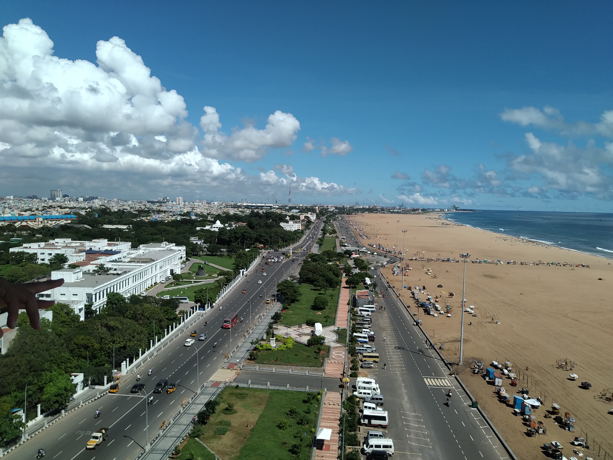

Top Cities in Tamil Nadu

Chennai
Gateway of South India

Madurai
Temple City

Coimbatore
Manchester of South India
Land of Temples
“Where Dravidian architecture stands tall and traditions live on.”
Gateway of South India
Temple City
Manchester of South India